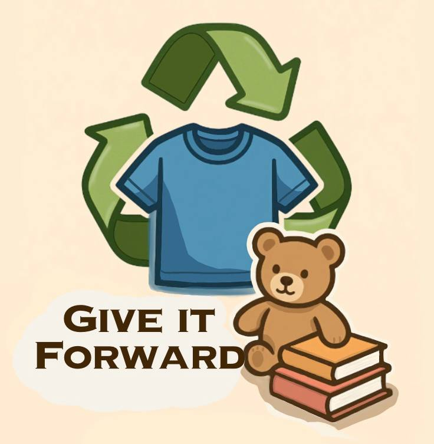
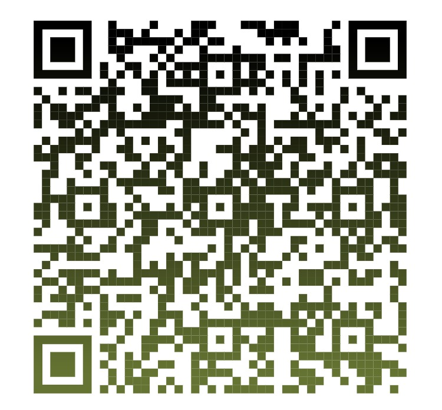

Don't need it? Give it forward!
Clothing waste is mass produced at an overwhelming rate, more than we need or use. Closets are being filled to the brim with clothes just to be thrown out after they just sit there. At the same time millions of people around the globe are unable to afford even basic clothing.
Give It Forward is a charity made to reduce the global issue of waste by collecting the clothes in your closet that are just collecting dust, and giving it to people in need.
⬇️ Support us by donating your unwanted clothes or items. ⬇️
Donate NowWe are a team of students from Denise: Aden Darie, Dilek Nur Kaya, Kseniia Kovalova & Milo Los, working alongside the Green Team to promote sustainability.
Our charity seeks to reduce clothing waste by organizing a Clothes Swap at school. Unclaimed items are donated to those in need.
How did we came out to this idea? — At first, we had no idea what to do for our English project. There were so many options, but we had to keep it achievable for us — students. After some discussion, we realized we wanted to create something meaningful because this is our future, and if we do not try to change things, then, who will?
After we have done some research, we were shocked by the numbers: tons of clothing and textiles are thrown away every year, and a lot of it ends up polluting our oceans. It was not only about the environment. We also started thinking about all the people who actually need this clothing. One of our team members shared a memory from their previous school, where students organized a donation drive. It gave as an idea of creating «Give it Forward» —That is how our project was born, the project that includes environmental care and social kindness.
We are donating everything in "Volksbond and Salvation Army"
Here you can add information about the research you conducted that led to your project.
Include statistics, findings, or any relevant data that supports your cause.
1. You can bring clothes you no longer wear to our swap event.
2. Then exchange them for something "new-to-you."
3. After the "Clothe Swap" we will donate unclaimed items to people in need.
Scan to donate
We are donating everything in "Volksbond and Salvation Army"
You can be the first to contribute to our cause!
*This number will be updated each time this event is executed
Email: s931811@denise.espritscholen.nl ~ Aden Darie
Email: s933715@denise.espritscholen.nl ~ Dilek Nur Kaya
Email: s94832@denise.espritscholen.nl ~ Kseniia Kovalova
Email: s931821@denise.espritscholen.nl ~ Milo Los
De Nieuwe Internationale School Esprit (DENISE)📍 Piet Mondriaanstraat 140, 1061 TT Amsterdam